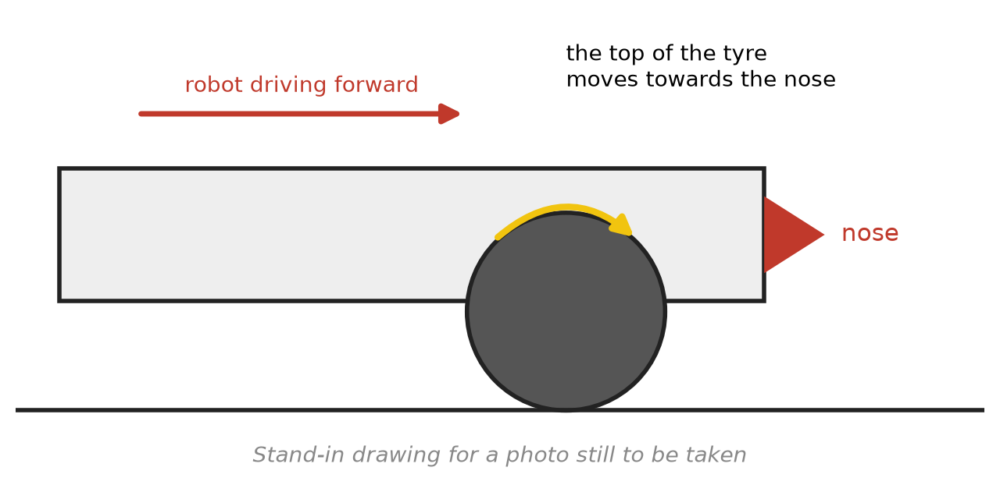

Are the motors turning the right way?¶
What you will have when this is done¶
Each of the four wheels turns the way the code thinks it does, so a stick pushed forward drives that side forward. You will also know how to spot a wheel that is wired backwards, and where the one line that fixes it lives.
Before you start¶
L2 is finished, so
L2b Tankdrives.The robot has about 2 m of clear floor for the driving step.
For the first step, something to rest the robot on so all four wheels are off the ground. A couple of blocks under the frame is enough.

One wheel from the side, with an arrow on the top of the tyre showing which way it travels when that wheel is driving the robot forward.¶
The steps¶
Step 1: watch the wheels with the robot held up¶
Rest the robot so no wheel touches the ground. Start L2b Tank. Push the left stick a little way
forward, and watch both left wheels. Then let go, push the right stick, and watch both right wheels.
A wheel driving the robot forward has the top of the tyre travelling toward the nose. That is the whole test, and you can see it at any speed, so keep the stick gentle.
You’ll know it worked when all four wheels pass it: the two left ones for the left stick and the two right ones for the right stick.
If it didn’t, write down which wheels had the top of the tyre going the other way. That is a wheel wired backwards, and step 3 is where it gets fixed. A wheel that does not move at all is a different problem: check that it is plugged in, and that the name in the Robot Configuration matches the name in the code.
Step 2: name the wheel by driving one stick at a time¶
Put the robot on the floor. With the robot held up you can see a backwards wheel directly, so this step is for when you cannot get under the robot, or want to be sure.
Push only the left stick forward. The left wheels drive and the right wheels sit still, so the robot should curve forward and to its own right.
Then push only the right stick forward. It should curve forward and to its own left.
A backwards wheel changes that in a way that names it:
What you push |
What the robot does |
Which wheel is backwards |
|---|---|---|
Left stick only |
Curves forward, to its right |
Neither left wheel |
Left stick only |
Slides to its left, no turn at all |
Front left |
Left stick only |
Slides to its right, no turn at all |
Back left |
Right stick only |
Curves forward, to its left |
Neither right wheel |
Right stick only |
Slides to its right, no turn at all |
Front right |
Right stick only |
Slides to its left, no turn at all |
Back right |
The slide is the giveaway. One stick on its own should always turn the robot, and a backwards wheel on that side cancels the turn exactly and leaves a sideways push instead.
With both sticks forward a backwards wheel is harder to read. The robot gets half the forward push it should, plus a slide and a spin, so it corkscrews. That tells you something is backwards but not which, which is why one stick at a time is the test.
You’ll know it worked when both sticks agree with the first two rows of the table.
If it didn’t, the row that matches names the wheel. Go to step 3.
Where this table comes from
The simulator, not a floor. Each row was produced by turning one wheel’s power around and running
L2b Tank for 1 s, and the numbers are the wheel powers going in and the pose coming out. No robot
has been driven with a wheel backwards, and a real one also scrubs its wheels sideways, so expect
the real thing to be messier than the table. The direction of the slide is what to read.
Step 3: fix it in one line¶
The four directions live inside drivetrainConfig, in
TeamCode/src/main/java/org/firstinspires/ftc/teamcode/pedro/Constants.java
c.frontLeftDirection.set(DcMotorSimple.Direction.FORWARD);
c.frontRightDirection.set(DcMotorSimple.Direction.REVERSE);
c.backLeftDirection.set(DcMotorSimple.Direction.FORWARD);
c.backRightDirection.set(DcMotorSimple.Direction.REVERSE);
Change the wheel you named from FORWARD to REVERSE, or from REVERSE to FORWARD. Send the
code to the robot again.
You’ll know it worked when step 1 and step 2 both pass.
If it didn’t, and the same wheel is still backwards, the code on the robot is not the code you just changed. Send it again and watch for the message that says it landed.
Step 4: let AutoTune settle it¶
Steps 1 to 3 get the robot driving today. The procedure that settles all four at once is the Mecanum
Tuner, and running it is task.autotune.
What it does, read from MecanumTuner.java rather than from a run: it asks for the four motor names
as the Robot Configuration spells them, then spins one motor at a time at half power beside a
diagram of which wheel it is and which way forward is, and asks you whether that one spun forward or
reversed. At the end it prints a drivetrainConfig with all four answers in it, for you to paste
into Constants.java.
It also catches the mistake steps 1 to 3 cannot tell apart from a backwards wheel. Answer that the motor did not spin, and it stops with this:
The wrong motor spun. Check that your motors are plugged into the correct ports, and that they are configured correctly. Then, try again.
Swap two motor names and each of those motors is handed the other one’s direction, so both of those wheels turn backwards. Steps 1 to 3 cannot see the difference. This check can.
What you just did¶
Which way a motor turns is not the code’s choice. It is set by how the motor is bolted on and
wired up. The two sides of the robot face opposite ways. So their motors turn opposite ways for
the same power. frontLeftDirection and its three neighbours tell the code what each motor
already does. That is why the left pair says FORWARD and the right pair says REVERSE. Above
that line, nothing has to think about it again. Every lesson after L2 asks for forward and gets
forward.
Where next¶
task.l3 stops the robot creeping when the sticks are centred.
task.autotuneis the full procedure, and it covers more than directions.
task.autotune is not written yet.